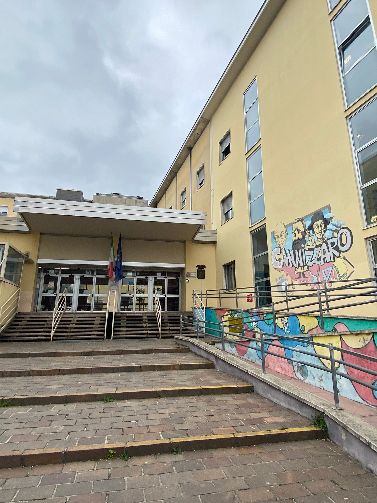

|
Nao Challenge La Nao Challenge è un contest didattico dedicato agli studenti delle scuole secondarie di secondo grado con l’obiettivo di potenziare le conoscenze dei giovani nel mondo della robotica umanoide attraverso lo sviluppo di software e applicazioni per divulgare le potenzialità sociali della robotica. Ogni anno viene definito un tema per legare il contest e la robotica a problemi attuali, nel nostro caso la sostenibilità. Per maggiori informazioni sulla sfida "Nao Challenge" visitare il sito e prendere visione del regolamento reperibile online. NAO CHALLENGE |

|
|  |
ITIS Stanislao Cannizzaro Il nostro istituto prese parte per la prima volta al progetto Nao Challenge nel 2012 e anche quest’anno ha dato la possibilità di adesione. Per la partecipazione, alcune giornate di orario scolastico sono state dedicate al suo svolgimento, permettendo all’intero gruppo di dedicarsi completamente ad esso. Il team è composto da 10 studenti del terzo anno che hanno lavorato insieme per sei settimane. MEMBRI: Giulia Marcuccetti, Alessandro Donati, Alessandro Procopio, Davide Renoldi, Gabriele Scotti, Luca Rovetta, Mario Scarpitta, Mattia Visentin, Regine Rose Archico e Simone Sottile. ITIS CANNIZZARO |


Phone: [+39] 366 526 8989
Email: infornaotici@gmail.com
In collaborazione con: